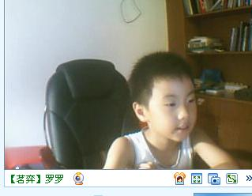
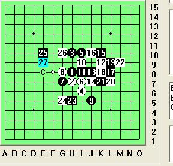
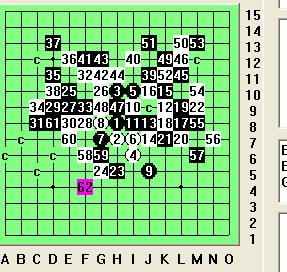
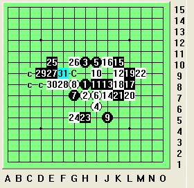

臭小子的一盘棋
#1 臭小子的一盘棋 作者：茗弈小刀 发表时间：2009-7-6 20:54:43

QQ上的圣诞老人跳起来：“干妈，我考完了！”是我那臭小子！他发过来视频，我的宝贝又瘦了，突然觉得心疼，眼睛酸酸的。“儿子，想干妈没？”“想”随即儿子亲我一下。心底那个甜蜜，哎，用我们四川话来说就3个字：不摆了！爸爸也跑过来看，爸爸这是第一次看到罗罗，（妈妈早看过了，也是喜欢得不得了）：“哇。这么乖个娃娃！”爸爸忍不住大叫一声。“干妈吃饭了吗？”儿子很懂事的问道。“还没。你呢？”“我现在就要吃。”乖乖说。“那一会吃了我们下棋吧。”“好的！”乖乖开心的朝我做了个拜拜吃饭去了。
我也去吃了，回来刚坐下，臭小子视频又发过来了。我没接“来下棋吧儿子。”他来了。瑞星开局，最流行13的变化。下了几步他又发视频过来，我很生气的说：“先下棋！再发我就把你拉进黑名单。”估计臭小子在那头嘟着嘴。由于很久没和他下了，他又考试，估计退步了很多。我决定下个比较弱的22考他的应变能力：

儿子这个23非常好，判断准确。24随便防了一手，臭小子25很机敏的落在要点上，就冲这个25，我知道臭小子已经抓住了这个13的精髓。没怎么考虑26断开，27着实吓了我一跳！臭小子不但没退步，棋风相反咄咄逼人！不好！我算了算28两个点，如果直接在27下边，那么黑在上边拓展做杀了。但似乎没有可以下的点了，其余更是简单杀，无奈之下落子F8。落子之后，我再一算，糟糕，黑仍然杀了。不急，且看臭小子能杀出来不。我笑着说：“杀不出来要打PP哈。”儿子下棋还是比较急，计算也不很好，很多时候还是感觉他只看眼前那一手棋。

31手弱了，我告诉他如果31下33位置，白是万万不敢挡外边的。所有很多时候，顺序是关键。由于儿子计算错误，白慢慢扭转了局面，特别是59手，对大局的分析出现了错误，导致白VCT。
正确杀法是：

下了2盘后我看时间晚了叫他去休息。最后臭小子象个大人似的对我说：“你暑假来不来我家嘛？我想你过来......"
［ 飞哥 于 2009-7-7 10:19:08 时花20金币送鲜花一朵］
［ 慎独 于 2009-7-7 10:49:48 时花20金币送鲜花一朵］
［ 慎独 于 2009-7-13 13:45:58 时花20金币送鲜花一朵］
#2 Re:臭小子的一盘棋 作者：没事摆石子玩 发表时间：2009-7-7 10:18:31
哈哈，这小孩是很可爱
#3 Re:臭小子的一盘棋 作者：飞哥 发表时间：2009-7-7 10:19:45
叫罗罗来成都玩撒。#4 Re:臭小子的一盘棋 作者：坏蛋色色色 发表时间：2009-7-7 10:25:27
如果罗罗来成都我也来 我住飞哥家好不？
我住飞哥家好不？
#5 Re:臭小子的一盘棋 作者：wsmwy 发表时间：2009-7-7 10:27:10
这个23必败？后边有没强防守？#6 Re:臭小子的一盘棋 作者：妙玉偷星 发表时间：2009-7-7 10:29:21
那我也争取来吧 想见小罗罗。
想见小罗罗。
#7 Re:臭小子的一盘棋 作者：茗弈宽容 发表时间：2009-7-7 10:36:00
很可爱罗罗，昨天看他下棋了，下得非常好。#8 Re:臭小子的一盘棋 作者：茗奕的飞猪 发表时间：2009-7-7 10:52:10
 臭小子米叫偶叔叔呢！
臭小子米叫偶叔叔呢！
#9 Re:臭小子的一盘棋 作者：树欲静而风不止 发表时间：2009-7-7 10:56:03
我昨天看了他和姐姐后边那盘，十分精彩。后边那盘姐姐输了其实，不过最后罗罗也是因为下了晕招 挂了、
挂了、
#10 Re:臭小子的一盘棋 作者：五子痴 发表时间：2009-7-7 18:46:31
小罗罗 小罗 肥罗 C罗 
#11 Re:臭小子的一盘棋 作者：沙海一丽 发表时间：2009-7-7 22:40:51
27手下最强 的是罗智瑶 依次是丁海锋 王姿雯 戴宇轩 杨佳麟
其中小杨才学2个月，已经1年半没下了。罗 、丁 、王都只学3个月；小罗也整一年 没下，小丁也一年没下，小王偶尔在下。
27已经退出五子棋圈，广东江齐文接手，培养茗弈后备力量。
27培养新人的速度的惊人的，才几个月就达到这样技术水平。
既然已经退出，以后就不再提他了。